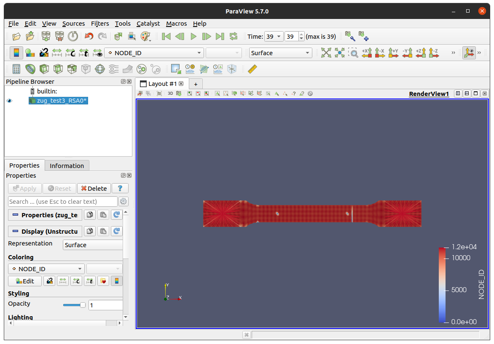
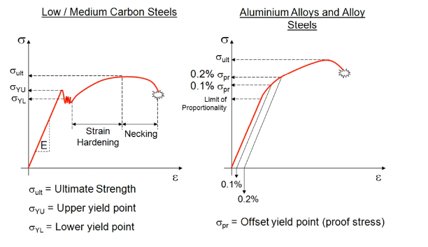
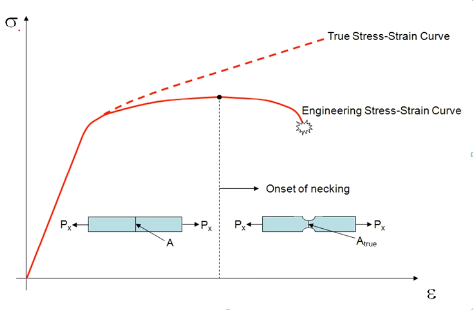
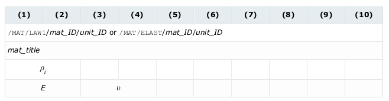
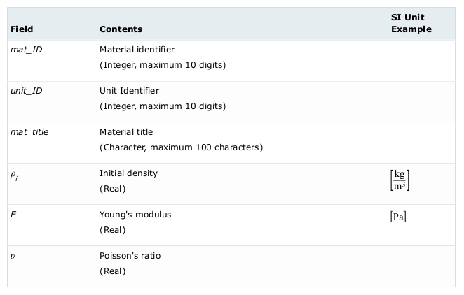
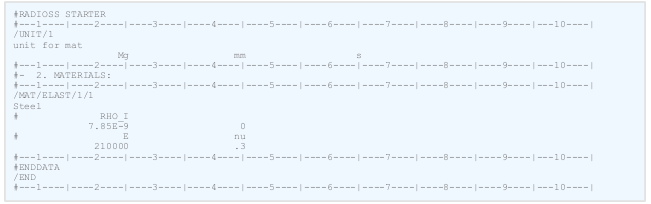

use OpenRadioss linux
Linux 下 OpenRadioss 的编译¶
环境¶
-
Ubuntu 20.0.4 or higher
apt-get update apt-get upgrade apt-get install build-essential apt-get install gfortran apt-get install cmake apt-get install perl apt-get install python3 apt-get install python-is-python3 apt-get install git-lfs apt-get install openmpi-bin openmpi-doc libopenmpi-dev apt-get install paraview推荐版本为gcc-11, g++-11, gfortran-11。paraview 用于后期可视化。
编译指令¶
获取源码¶
- LFS:
git lfs install - 运行(这里需要先绑定SSH key)
git clone git@github.com:OpenRadioss/OpenRadioss.git.
OpenRadioss Starter¶
-
进入 OpenRadioss/starter 目录
cd OpenRadioss/starter -
运行
build_script.sh./build_script.sh -arch=linux64_gf -
./build_script.sh参数:[]$ ./build_script.sh build_script ------------ Use with arguments : -arch=[build architecture] -arch=linux64_gf (SMP executable / Gfortran compiler) -prec=[dp|sp] : set precision - dp (default) |sp -static-link : Fortran, C & C++ runtime are linked in binary -debug=[0|1] : debug version 0 no debug flags (default), 1 usual debug flag -addflag="list of additionnal flags" : add compiler flags to usual set Execution control -nt=[threads] : number of threads for build -verbose : Verbose build -clean : clean build directory
OpenRadioss Engine¶
-
进入 OpenRadioss/engine 目录
-
运行
build_script.sh./build_script.sh -arch=linux64_gf -mpi=ompi -
./build_script.sh参数:[]$ ./build_script.sh build_script ------------ Use with arguments : -arch=[build architecture] -arch=linux64_gf (SMP executable / Gfortran compiler) -arch=linux64_gf -mpi=ompi (OpenMPI executable / Gfortran compiler) MPI libraries -mpi=[mpi] not set : SMP (default) -mpi=ompi : OpenMPI Controling MPI Libraries - if need choose one of the 3 Option Set If no options set, recommended OpenMPI directories are uses (default) 1. -mpi-os : link with default MPI version installed on system libraries are in default installation 2. -mpi-root=[directory] : set rootname to link with specific MPI installation 3. -mpi-include=[directory] : set include directory where to find mpif.h and mpi.h -mpi-libdir=[directory] : set library directory where to find mpi libraries Other control -prec=[dp|sp] : set precision - dp (default) |sp -static-link : Fortran, C & C++ runtime are linked in binary -debug=[0|1] : debug version 0 no debug flags (default), 1 usual debug flag -addflag="list of additionnal flags" : add compiler flags to usual set Build control -nt=[threads] : number of threads for build -verbose : Verbose build -clean : clean build directory MUMPS linear solver: available only for dp, with mpi" -mumps_root=[path_to_mumps] : path_to_mumps/lib/libdmumps.a must exist -scalapack_root=[path to scalapack] : path_to_scalapack/libscalapack.a must exist -lapack_root=[path to lapack] : path_to_lapack/liblapack.a must exist
自动化脚本（待定）¶
cd starter
./build_script.sh -arch=linux64_gf
cd ../engine
./build_script.sh -arch=linux64_gf -mpi=ompi
OpenRadioss 的使用¶
前处理¶
-
Hypermesh
- lsprepost (*)
计算¶
后处理¶
使用 LSDYNA 格式输入¶
测试实例¶
测试例子是拉伸模拟。
bash 脚本¶
myjobname=$(echo "$1" )
echo $myjobname "running in OpenRadioss"
export OMP_STACKSIZE=400m
export OMP_NUM_THREADS=8
./starter_linux64_gf -i "../source/"$myjobname".k" -np $2 -outfile="../output"
#./starter_linux64_gf -i $myjobname".k" -np $2 -nt 4
# 这里是找到source文件夹下的，LS-DYNA 格式文件（.k）并将其传递给starter 进行计算。
mpiexec -n $2 --map-by socket:PE=$OMP_NUM_THREADS --bind-to core ./engine_linux64_gf_ompi -i "../bin/"$myjobname"_0001.rad" -outfile="../output"
#mpiexec -n $2 .engine_linux64_gf_ompi -i $myjobname"_0001.rad" -nt 1
# 在处理.k文件时，starter 会在其目录下生成"_0001.rad"文件，需要将其传递给 engine
BASEDIR=$(dirname "$0")
for file in ../output/*;
do
if [ -n "${file: -3}" ] && [ "${file: -3}" -eq "${file: -3}" ] 2>/dev/null && [[ "${file: -4:1}" == "A" ]]; then
./anim_to_vtk_linux64_gf $file > "$file.vtk"
echo "$file is converted"
# anim 文件转化为 vtk 文件
elif [[ "${file: -3}" == "T01" ]] ;then
./th_to_csv_linux64_gf $file
CSV="$file.csv"
# T01 文件转化为 csv 文件
fi
done
cd ../output/
#paraview $myjobname"A..vtk" $CSV
paraview $myjobname"A..vtk" $CSV
exit
在命令行输入 bash process_k.sh zug_test3_RS 1即可。其中process_k.sh是脚本名字，zug_test3_RS是模型名字，1是并行进程数。
运行结果¶

总结¶
在使用Openadioss 处理LS-DYNA 格式的文件时，需要 .k 文件。这个文件其实是可以直接放在LS-DYNA 上进行计算的。这里提供了一种其他的计算方式——使用OpenRadioss。
To Do¶
需要验证计算的正确性：也就是使用LS-DYNA计算同样的例子，观察计算结果是否有出入。
- LS-DYNA 是商业软件，能找到的软件不支持 Ubuntu 系统。
- 可以在windows 下模拟，将结果和进行对比。
- 如何衡量误差
- 这一部分有很多需要考虑的，比如毁伤面积、毁伤深度。
在服务器上运行 OpenRadioss¶
没有权限。。。 = =
OpenRadioss 二次开发¶
READ_MATERIAL_MODELS.F¶
这段代码定义了一个 Fortran 的子程序 READ_MATERIAL_MODELS，其主要功能是管理与材料模型相关的读取器，包括以下内容：
材料本构定律（Constitutive Laws）：/MAT
状态方程（Equations of State）：/EOS
失效模型（Failure models）：/FAIL
粘性模型（Viscosity）：/VISC
热参数（Thermal parameters）：/HEAT
该子程序的输入包括：
MAT_ELEM：材料元素的参数
MLAW_TAG：材料本构定律的标签
FAIL_TAG：失效模型的标签
VISC_TAG：粘性模型的标签
EOS_TAG：状态方程的标签
BUFMAT：材料数据的缓存区
BUFLEN：缓存区的长度
IPM：材料参数的整型数组
PM：材料参数的实型数组
UNITAB：单位制表
MULTI_FVM：多重有限体积法的数据结构
MAXEOS：最大状态方程数
FAILWAVE：失效波的数据结构
NLOC_DMG：非局部损伤的数据结构
LSUBMODEL：子模型的数据结构
TABLE：表的数据结构
NPC：数组 NPC
该子程序的输出包括：
MAT_ELEM：材料元素的参数
MLAW_TAG：材料本构定律的标签
FAIL_TAG：失效模型的标签
VISC_TAG：粘性模型的标签
EOS_TAG：状态方程的标签
该子程序还调用了其他一些子程序，例如 HM_READ_MAT、HM_READ_EOS、HM_READ_FAIL、HM_READ_VISC、HM_READ_LEAK、READ_ALE_MAT、READ_EULER_MAT、FILL_BUFFER_51_0、HM_READ_THERM、HM_READ_THERM_STRESS 和 HM_READ_NONLOCAL 等，用于读取不同类型的材料模型数据。
接下来考虑分析 HM_READ_MAT 程序，分析软件是如何作的。
HM_READ_MAT.F¶
这是用于读取有限元分析软件中的材料模型定义的代码。
它定义了阅读材料模型所需的各种模块、参数和公共块。其中包括材料定律标签、材料参数、单位等。
主例程是HM_READ_MAT。它循环遍历模型中定义的每种材料 (HM_NUMMAT)。
对于每种材料，它根据材料定律关键字（MAT00、MAT01 等）调用特定的读取例程。这些读取例程位于 mat 子目录中的单独文件中。
读取例程解析输入、填充材料参数数组、设置材料所需数据的标志，并存储材料 ID、定律类型、应变率设置等内容。
读取材料后，它会进行一些后处理，例如计算派生值（剪切模量）、检查重复 ID 以及计算输出所需数量的平方根。
每种材料的属性存储在 MAT_PARAM 数组和各种其他公共块中。
总之，它循环遍历材料，调用特定于定律的读取器，并将所有材料数据收集到参数数组和通用块中，以便稍后在 FEA 分析中使用。关键部分是模块化法则读取器和用于保存材料道具的中央 MAT_PARAM 数据结构。
- 因此，想要定义全新的材料，所要做的事情是自定义MATxxx文件。
Radioss 中材料本构¶
各向同性弹性¶
| Description | Model Name | Keyword/MAT | Law# |
|---|---|---|---|
| 空材料 | Void | /VOID | 0 |
| 线弹性 | Elastic (Hooke) | /ELAST | 1 |
| 超弹性 | Tabulated Hyperelastic | n/a | 69 |
| 超弹性 | Ogden Formulation | n/a | 82 |
| #### 各项同性弹塑性 | |||
| LAW 2 / 36 | |||
| #### 其他 | |||
| #### 爆炸 | |||
| Description | Model Name | Keyword/MAT | Law# |
| ----------- | ----------- | --- | --- |
| Detonation driven | Jones Wilkins Lee | /JEL | 5 |
| Hydrodynamics | Lee-Tarver | /LEE-TARVER | 41 |
| Multi-materials | Soild, liquid,gas and explosives | /MULTIMAT | 51 |
| #### 失效模型——/FAIL | |||
| /Tuler-Butcher 高速碰撞失效 | |||
| ### 例子——/MAT/LAW1或/MAT/ELAST: 弹性材料 | |||
| * LAW1 使用胡克定律对各向同性，线弹性材料进行建模 | |||
| * 可用于杆，梁，壳以及实体solids | |||
| * 适用于连接刚体 | |||
| * 不适用形变大的构件 |
弹塑性应力——应变曲线

真实应力形变 * 真实应力：考虑当前或真实横截面积A_{true}的应力 \sigma_{true}=\frac{P_x}{A_{true}} * 在塑性变形范围内，塑性变形横截面积永久减小 * 继续使用工程应力不再准确

#### MAT1 定义方式 这个关键词用胡克定律定义了一种各向同性的线弹性材料。这个定律表示应力和应变之间的线性关系。它可用于桁架，梁(仅3型)，壳和实体元件。 格式

定义
例子
原理：
- 该材料适用于纯粹的弹性材料。材料的性能只取决于两个因素：
- 杨氏模量: E
- 泊松比: \nu
- 剪切模量: (可计算) G=\frac{E}{2(1+\nu)}
- 应力应变关系 \begin{bmatrix} \epsilon_{11}\\ \epsilon_{22}\\ \epsilon_{33}\\ \gamma_{23}\\ \gamma_{31}\\ \gamma_{12} \end{bmatrix}=\frac{1}{E} \begin{bmatrix} 1&-\nu&-\nu&0&0&0\\ -\nu&1&-\nu&0&0&0\\ -\nu&-\nu&1&0&0&0\\ 0&0&0&2(1+\nu)&0&0\\ 0&0&0&0&2(1+\nu)&0\\ 0&0&0&0&0&2(1+\nu) \end{bmatrix} \begin{bmatrix} \sigma_{11}\\ \sigma_{22}\\ \sigma_{33}\\ \sigma_{23}\\ \sigma_{31}\\ \sigma_{12} \end{bmatrix}
- 密度值通常用于显式模拟，也可以用于静态隐式模拟，以便在拟静态分析中达到更好的收敛性。
- 当通过壳体厚度的积分点个数不同于NP=1(膜)时，对LAW1和壳单元(/PROP/TYPE1 (shell))采用全局积分法。
- 失效模型在全局集成的情况下不可用。在这些情况下，具有很高屈服应力的LAW2和LAW27可以作为LAW1的替代品。 #### MAT1 代码解读 总体框架是
-
获取输入
CALL HM_OPTION_IS_ENCRYPTED(IS_ENCRYPTED) CALL HM_GET_FLOATV('MAT_RHO', RHO0 ,IS_AVAILABLE,LSUBMODEL,UNITAB) CALL HM_GET_FLOATV('Refer_Rho',RHOR ,IS_AVAILABLE,LSUBMODEL,UNITAB) CALL HM_GET_FLOATV('MAT_E', YOUNG ,IS_AVAILABLE,LSUBMODEL,UNITAB) CALL HM_GET_FLOATV('MAT_NU', ANU ,IS_AVAILABLE,LSUBMODEL,UNITAB)-
计算参数
IF(RHOR == ZERO ) RHOR=RHO0C IF (YOUNG<=ZERO) THEN CALL ANCMSG(MSGID=683, . MSGTYPE=MSGERROR, . ANMODE=ANINFO, . I1=ID, . C1=TITR, . C2='YOUNG''S MODULUS') ENDIF IF(ANU==HALF)ANU=ZEP499
C G=YOUNG/(TWO(ONE+ANU)) C0=ZERO C1=YOUNG/(THREE(ONE-TWOANU)) E0=ZERO E1MN2=YOUNG/(ONE-ANU**2) EN1N2=ANUE1MN2 SDSP =SQRT(YOUNG/MAX(RHOR,EM20)) ISRATE = 0 * 保存参数PM(1) =RHOR PM(20)=YOUNG PM(21)=ANU PM(22)=G PM(23)=E0 PM(24)=E1MN2 PM(25)=EN1N2 PM(26)=FIVE_OVER_6 PM(27)=SDSP PM(31)=C0 PM(32)=C1 PM(89) =RHO0
-
-
异常处理
c----------------- CALL INIT_MAT_KEYWORD(MATPARAM,"TOTAL") IF (ANU > 0.49) THEN CALL INIT_MAT_KEYWORD(MATPARAM,"INCOMPRESSIBLE") ELSE CALL INIT_MAT_KEYWORD(MATPARAM,"COMPRESSIBLE") END IF CALL INIT_MAT_KEYWORD(MATPARAM,"HOOK") c----------------- WRITE(IOUT,1001) TRIM(TITR),ID,01 WRITE(IOUT,1000) IF(IS_ENCRYPTED)THEN WRITE(IOUT,'(5X,A,//)')'CONFIDENTIAL DATA' ELSE WRITE(IOUT,1100)RHO0 WRITE(IOUT,1300)YOUNG,ANU,G ENDIF C IPM(252)= 2 PM(105) = TWO*G/(C1+FOUR_OVER_3*G) C------------
控制输出
C----------- RETURN 1000 FORMAT( & 5X,' ELASTIC MATERIAL (/MAT/LAW01)',/, & 5X,' -----------------------------') 1001 FORMAT( & 5X,A,/, & 5X,'MATERIAL NUMBER . . . . . . . . . . . .=',I10/, & 5X,'MATERIAL LAW. . . . . . . . . . . . . .=',I10/) 1100 FORMAT( & 5X,'INITIAL DENSITY . . . . . . . . . . . .=',1PG20.13/) 1300 FORMAT( & 5X,'YOUNG''S MODULUS . . . . . . . . . . . .=',E12.4/, & 5X,'POISSON''S RATIO . . . . . . . . . . . .=',E12.4/, & 5X,'SHEAR MODULUS . . . . . . . . . . . . .=',E12.4//)
-
在数据里最重要的是 PM 以及 IPM ，分别存储了材料参数和材料 ID。但是暂时没有相关文档说明其具体内容。提取 mat 文件夹下所有 PM 变量的信息汇总如下:
PM(1) = RHO0
PM(1) = RHOR
PM(1) = RHOR
PM(01) = RHOR
PM(1) = RHOR
PM(01) = RHO0
PM(01)=RHOR
PM(1) = RHO0 ! RHOR
PM(1) = RHO0
PM(1)=RHOR
PM(1) =RHOR
PM(1) = RHO0
PM(2) = GS
PM(8) =ISRATE
PM(9) = TWO*PI *FCUT
PM(9) =FCUT*TWO*PI
PM(9) = FCUT*TWO*PI
PM(9) = ASRATE
PM(12) = SQRT(MAX(ZERO, G0)) !done by default in lecmuser.F for law34
PM(17) = MU
PM(17) = AMU
PM(20)= MAX(E11,E22)/DETC
PM(20) = MW
PM(20) = STIFF ! Stiffness contact
PM(20)= CMAX / TWO
PM(20) = YMC
PM(20)=NMAT+EM01
PM(20)= YOUNG
PM(20) = NBMAT + EM01
PM(20)= MAX(E11,E22,E33)
PM(20)=YOUNG
PM(20)=E
PM(20) = MAX(E11,E22)/DETC
PM(20) = YOUNG
PM(21) = ANUC
PM(21) = ZERO ! NU
PM(21)=NU
PM(21)= ANU
PM(21)=ANU
PM(21)= NU
PM(21) = SQRT(N12*N21)
PM(21) = NUG
PM(21) = NU
PM(21) = CPA
PM(21)= THIRD*(N12+N31+N23)
PM(22) = G0
PM(22) = YMC/(TWO*(ONE+ANUC))
PM(22) = GS !! TWO*G
PM(22)=G
PM(22)= G
PM(22) = STIFF*HALF ! GMAX
PM(22) = CPB
PM(22) = G
PM(22)= THIRD*(G12+G23+G31)
PM(22) = GS
PM(22) = MAX(G12,G23,G31)
PM(23) = YOUNG
PM(23)= E0
PM(23) = CPC
PM(23) = EM01*STIFFAVG ! Hourglass stiffness for QEPH
PM(23) = E0
PM(23) = ZERO ! E0
PM(23) = E0
PM(23)=E0
PM(24)= PM(20)
PM(24) = NU * YOUNG / (ONE-NU*NU)
PM(24) = YOUNG/(ONE - NU**2)
PM(24)= CMAX/(ONE - NU**2) / TWO
PM(24) = PM(25) + TWO*PM(22)
PM(24) = E1MN2
PM(24) = STIFF ! Stiffness for time step computation
PM(24)=D2
PM(24) = YOUNG/(ONE - NUG**2)
PM(24)=E1MN2
PM(24)=VIS
PM(24) = PM(20)
PM(24) = CPD
PM(25) = GAM
PM(25)=D3
PM(25)=NR
PM(25)=EN1N2
PM(25) = CPE
PM(25) = YMC*ANUC/(ONE+ANUC)/(ONE-TWO*ANUC)
PM(25)= 1.
PM(25) = EN1N2
PM(25) = PM(21)*PM(24)
PM(26)=FIVE
PM(26) = FIVE_OVER_6
PM(26) = CPF
PM(26)=PM(26)*ONE_OVER_6
PM(26)=NT
PM(26)=THET
PM(26)=FIVE_OVER_6
PM(26)= CB
PM(26) = MAX(ZERO,DSUP1)
PM(27) = SQRT(A11/RHO0) ! sound speed estimation
PM(27) = SQRT(YOUNG/RHO0) ! Sound speed
PM(27)=D
PM(27) = SSP
PM(27) = SDSP
PM(27)=SDSP
PM(27)= CN
PM(27) = SQRT(A1/RHO0) ! sound speed estimation
PM(27)= SSP
PM(27) = VCRT2
PM(27) = SQRT(E/MAX(RHOR,EM20))
PM(27)=APY
PM(27) = SQRT((BULK + FOUR_OVER_3*G)/RHO0) ! sound speed estimation
PM(27) = MAXVAL(SSP(1:4))
PM(27)=IDF
PM(27) = R_IGC1
PM(27)= SQRT(E/RHO0) ! Sound speed for beam elements
PM(27) = VMAX
PM(27) = D
PM(28) = MAX(ONEP0001,FMAX)
PM(28) = ONE/YOUNG
PM(28) = GAMRP
PM(28) = ONE-HT/YMC
PM(28)=VB
PM(28) = MAX(ONEP0001,(SIGMX/CA)**2)
PM(28)=ONE/YOUNG
PM(28)=NR
PM(29)=-ANU*PM(28)
PM(29) = -NU*PM(28)
PM(29) = GAM1
PM(29) = ROK
PM(29)=NT
PM(29)=TM0
PM(30)=ONE/G
PM(30)=IDF
PM(30) = ONE/G
PM(30)=E00
PM(30) = RO0
PM(31)=ZERO
PM(31) = -PSH + C0+C1*MU+ C3*MU**3+(C4+C5*MU)*E0
PM(31) = ZERO ! C0
PM(31)= C0
PM(31)= ZERO
PM(31) = -PSH + C0+C1*MU+C2*MU**2+C3*MU**3+(C4+C5*MU)*E0
PM(31)=C0
PM(31) = P0+PSHIFT
PM(31)=P0
PM(31) = C0-PSH
PM(31) = P0
PM(31)= C0-PSH
PM(32) = C1
PM(32)= RBULK
PM(32)= RHOR*C**2
PM(32)=C1
PM(32) = RBULK
PM(32) = BULK
PM(32)=BULK
PM(32)= C1
PM(32) = GS
PM(32) = C1
PM(33)=ZERO
PM(33)= C2
PM(33) = E11
PM(33)= SIGT1
PM(33)=E11
PM(33)=C
PM(33)=C2
PM(33) = A
PM(33) = FC
PM(33) = RE0/RHO0
PM(34)=E22
PM(34) = E22
PM(34)= SIGT2
PM(34)=ZERO
PM(34) = B
PM(34) = -HALF*SSP2/CARL**2
PM(34)=C3
PM(34)=S
PM(34)= C3
PM(34) = RT
PM(35)=PCC
PM(35) = RC
PM(35)=N12
PM(35) = N12
PM(35)=C4
PM(35)=BUNL
PM(35)= C4
PM(35)=XKL
PM(35) = R1
PM(35)= SIGT3
PM(35)=ZERO
PM(36)=XMUMX
PM(36)=ZERO
PM(36) = N21
PM(36)= C5
PM(36)=N21
PM(36)=GAM0
PM(36)=C5
PM(36) = RT*(TWO*RC-RT)
PM(36) = R2
PM(36)=XLAMB
PM(36)= EFIB
PM(37)=-INFINITY
PM(37) = G12
PM(37)= EPSFT
PM(37) = -PSH
PM(37)= PMIN
PM(37)=PMIN
PM(37) = (RC-RT)**2
PM(37) = EF
PM(37)=G12
PM(37) = PMIN
PM(37)=ATOM
PM(38) = UPARAM(42) !VDET
PM(38)=G23
PM(38) = AA
PM(38) = CA
PM(38)= EPSFC
PM(38)=CA
PM(38) = D
PM(38)=A0
PM(38)= CA
PM(38) = D
PM(38) = G23
PM(38)= EFIB
PM(38)=VDET
PM(38) = SIG0
PM(39)=CB
PM(39)= ALPHA
PM(39) = CB
PM(39)=G31
PM(39)=A1
PM(39)= CB
PM(39) = BC
PM(39) = G31
PM(39)=CE
PM(39) = PCJ
PM(40)=A2
PM(40) = BT
PM(40) = ONE/TSCAL
PM(40) = CN
PM(40) = PM(1)*D**2/PCJ
PM(40) = IFLAG
PM(40)=CN
PM(40)= CN
PM(40)= D11
PM(41) = EPSM
PM(41)= D12
PM(41) = IBFRAC
PM(41) = TIMESCAL
PM(41)= EPSM
PM(41)=AMX
PM(41) = AC
PM(41) = EP20 ! EPSM
PM(41) = WPLAMX
PM(41)=EPSM
PM(41)=WPLAMX
PM(42) = QOPT
PM(42)=IOFF
PM(42)=SIGM
PM(42)= D13
PM(42) = IOFF
PM(42) = TSCAL
PM(42)=FAC_Y
PM(42) = SIGM
PM(42) = FT*FC/YMC
PM(42)= SIGM
PM(43)=CC
PM(43)=CM
PM(43) = HBP
PM(43) = C0
PM(43)= CC
PM(43)= D22
PM(43) = CB1
PM(43) = CC
PM(43)=PEXT
PM(43) = ESCAL
PM(44)=EPS0
PM(44) = DE
PM(44)=PSTAR
PM(44) = EPS0
PM(44)= D23
PM(44) = CB2
PM(44)=DE
PM(44) = KSCAL
PM(44) = BULK
PM(44) = RCOMP
PM(44) = ALI
PM(44)= EPS0
PM(45) = W
PM(45) = ALF
PM(45) = CH
PM(45)=BUNL
PM(45)= CM
PM(45)= D33
PM(45)=EPSL
PM(45)=CM
PM(45)=A11
PM(46) = TMELT
PM(46)=CB
PM(46)=SSL
PM(46)=XMUMX
PM(46)= G12
PM(46)=A22
PM(46)=TMELT
PM(46)= TMELT
PM(46) = CB
PM(46) = VKY
PM(46)=HL
PM(47)=TMAX
PM(47)=A*AK
PM(47)=CN
PM(47)=ZERO ! MUMIN
PM(47) = CN
PM(47) = EPSMAX
PM(47)= TMAX
PM(47)=YLDL
PM(47)=A1122
PM(47)= G23
PM(48)=E
PM(48)=A
PM(48)= G31
PM(48)=A12
PM(48)=IFORM
PM(48)=NR
PM(48)=CS
PM(48)=EL
PM(48) = HV0
PM(49)=A
PM(49) = EXPO
PM(49)=FMAX
PM(49)=GAM0M
PM(49) = ICC
PM(49)=ICC
PM(49)= SSP
PM(49) = FMAX
PM(49)=C0
PM(49)=NT
PM(50)=AM
PM(50)=B
PM(50)=ZERO
PM(50) = YMS
PM(50)=IDF
PM(50)=CC
PM(50) = ITYP
PM(50)=ONE
PM(51)=SIG
PM(51)=MT
PM(51)=EPS0
PM(51) = Y0S
PM(51) = INOD ! USR2SYS APRES FSDCOD, IF(IFORM8==2) INOD=USR2SYS(INOD,ITABM1,MESS)
PM(51)=GAME
PM(51)=C3
PM(51)=YP1
PM(52)=GP
PM(52)=ONEP414*PM(17)*PM(1)*SSP
PM(52)=ICC
PM(52)=C4
PM(52)=TM
PM(52)=XKMAX
PM(52) = ONEP414*MU*PM(1)*SDSP
PM(52)=ONEP414*AMU*PM(1)*SDSP
PM(52) = ETS
PM(53)=ICC
PM(53)=F1
PM(53)=ONE/CP
PM(53)=DSP
PM(53) = ARM1
PM(53) = AREAMIN1
PM(53)=ZERO
PM(54)=E0H
PM(54)=F2
PM(54) = ARM2
PM(54) = ZERO
PM(54)=F1
PM(54) = ONE / (AREAMIN2-AREAMIN1)
PM(54)=TI
PM(55)=FISOKIN
PM(55)=RP3
PM(55)=F3
PM(55)=F2
PM(55) = ARM3
PM(56)=F4
PM(56) = ONE !
PM(56) = POROSITY
PM(56)=VJ
PM(56)=F11
PM(57)=F5
PM(57)=C1
PM(57) = ICAP+EM01
PM(57)=F22
PM(58)=C2
PM(58)=F33
PM(58)=F6
PM(58) = ONE-HVFAC
PM(59)=F11
PM(59) = ZERO !
PM(59)=F12
PM(59)=F1
PM(59)=C3
PM(59)=ALPHA
PM(60)=F22
PM(60)= BETA
PM(60)=EPST1
PM(60)=D1
PM(60) = EPST1
PM(60)=F2
PM(61)= TMAX
PM(61)=ALPHAP
PM(61) = EPST2
PM(61)=EPST2
PM(61)=F33
PM(61)=F4
PM(62)=F5
PM(62)=F44
PM(62)=EPSM1
PM(62) = EPSM1
PM(63)=F11
PM(63)=EPSM2
PM(63)=F55
PM(63) = EPSM2
PM(64) = DMAX1
PM(64)=F22
PM(64)=DMAX
PM(64)=F66
PM(65)=SHRDAM
PM(65) = DMAX2
PM(65)=F12
PM(65)=F44
PM(66) = EPSF1
PM(66)= F23
PM(66)=SHRMAX
PM(66)=F55
PM(67)= F13
PM(67)=SHRDMAX
PM(67)=F12
PM(67) = EPSF2
PM(68)=WPLAREF
PM(68)=F23
PM(69)=SPH
PM(69) = SPH
PM(69) = RCP
PM(69)=C11
PM(70)=ZERO
PM(71) = JTHE+EM01
PM(72) = ZERO
PM(72)=ZERO
PM(73)=C22
PM(73)=C11
PM(74)=C33
PM(74)=C22
PM(75) = AS
PM(75)=C12
PM(75)=C33
PM(76)=C23
PM(76) = BS
PM(76)=C12
PM(77)=C13
PM(77)=C23
PM(77) = CF
PM(78) = T0
PM(78)=C13
PM(78)=DELTA
PM(79) = T0
PM(79) = T0
PM(79)=T0
PM(79)=DELTA
PM(79)=THREE100
PM(80) = TMELT
PM(80)=INFINITY
PM(80) = INFINITY
PM(80)=TMELT
PM(80)= TMELT
PM(80) = EP30
PM(81) = CTM
PM(81)=CTM
PM(81)= SIGT1
PM(82)= SIGT2
PM(82)=CT1
PM(83)=CT2
PM(83)= SIGT3
PM(84)=CT3
PM(84)= EPSFT
PM(85) = SK
PM(85)= EPSFC
PM(85)=SK
PM(86)=SE
PM(86) = SE
PM(87) = RK0/RHO0
PM(87)=RK0/RHO0
PM(88)= ZERO
PM(88) = PSH
PM(88)=PSH
PM(88)= PSH
PM(89)=RHO0
PM(89) = RHO0
PM(89) = RHO0
PM(89) =RHO0
PM(89) = RHO0
PM(89)= RHO0
PM(91) = RHO10
PM(91)=MAXVAL(RHO0_(1:4))
PM(95)=RPR
PM(95) = RPR
PM(97) = RHOC
PM(98) = ALP0
PM(98)=EPSF1
PM(98)=WPLAREF
PM(99) = DC+ONE
PM(99)=EPSF2
PM(100) = BULK
PM(100) = RBULK
PM(100) = RBULK !PARMAT(1)
PM(100)= E
PM(100)= C1
PM(100) = PARMAT(1)
PM(100)= PARMAT(1)
PM(100)= BULK
PM(104) = P0+PSHIFT
PM(104)=C0 - PSH
PM(104)=C0
PM(104)=P0
PM(104) = C0-PSH
PM(105) = GS/(BULK + TWO_THIRD*GS)
PM(105) = GS/(RBULK + TWO_THIRD*G)
PM(105) = DMIN/DMAX/DMAX
PM(105) = (ONE -TWO*ANU)/(ONE - ANU)
PM(105) = ( ONE -TWO*ANU)/(ONE - ANU)
PM(105) =DMIN/C1**2
PM(105)= TWO*PM(22)/(BULK+FOUR_OVER_3*PM(22)) ! =(1-2*Nuc)/(1-Nuc)
PM(105) = TWO*G/(C1+FOUR_OVER_3*G) ! =(1-2*Nu)/(1-Nu)
PM(105) = (ONE -TWO*ANU)/(ONE - ANU)
PM(105) = TWO*G0/(BULK+FOUR_OVER_3*G0) ! =(1-2*Nu)/(1-Nu)
PM(105) = (ONE -TWO*ANU)/(ONE - ANU) ! TWO*G/(BULK + FOUR_OVER_3*G)
PM(105) = TWO*G/(C1+FOUR_OVER_3*G)
PM(105) = TWO*GS/(RBULK + FOUR_OVER_3*GS)
PM(105) =MIN(D11*D22-D12**2,D22*D33-D23**2,D11*D33-D13**2)/C1**2
PM(141)=SIGYT1
PM(141)= SIGYT1
PM(142)=CBT1
PM(142)= SIGYT2
PM(143)= SIGYC1
PM(143)=CNT1
PM(144)= SIGYC2
PM(144)=SIGMXT1
PM(145)= SIGYT12
PM(145)=CCT1
PM(146)= SIGYC12
PM(146)=SIGYT2
PM(147) = IFLAG
PM(147)=CBT2
PM(148) = S1
PM(148)=CNT2
PM(149)=SIGMXT2
PM(149) = S2
PM(150) = C11
PM(150)=CCT2
PM(151)=SIGYC1
PM(151) = C22
PM(152)=CBC1
PM(152) =S12
PM(153)=CNC1
PM(154)=SIGMXC1
PM(155)=CCC1
PM(156)=SIGYC2
PM(157)=CBC2
PM(158)=CNC2
PM(159)=SIGMXC2
PM(160)=CCC2
PM(160) = EADD
PM(161)=SIGYT12
PM(161) = TBEGIN
PM(162)=CBT12
PM(162) = TEND
PM(163) = REACTION_RATE
PM(163)=CNT12
PM(164)=SIGMXT12
PM(164) = A_MIL
PM(165)=CCT12
PM(165) = M_MIL
PM(166)=EPS1T1
PM(166) = N_MIL
PM(167)=EPS2T1
PM(167) = REACTION_RATE2
PM(168)=SIGRST1
PM(168) = ALPHA_UNIT
PM(169)=WPLAMXT1
PM(170)=EPS1T2
PM(171)=EPS2T2
PM(172)=SIGRST2
PM(173)=WPLAMXT2
PM(174)=EPS1C1
PM(175)=EPS2C1
PM(176)=SIGRSC1
PM(177)=WPLAMXC1
PM(178)=EPS1C2
PM(179)=EPS2C2
PM(180)=SIGRSC2
PM(181)=WPLAMXC2
PM(182)=EPS1T12
PM(183)=EPS2T12
PM(184)=SIGRST12
PM(185)=WPLAMXT12
PM(186) = E33
PM(187) = IYEILD
PM(188) = RATIO
PM(189) = IMODWP
PM(191) = XK
PM(192) = XK
PM(192) = RHOA
PM(193) = FRAC
PM(193) = XK
PM(194) = AA
PM(195) = BB
PM(196) = TAUX
PM(197) = KK
PM(198) = ICLOS
PM(199) = RHOEXT
PM(200) = EINT_EXT
PM(201) = INCGAS